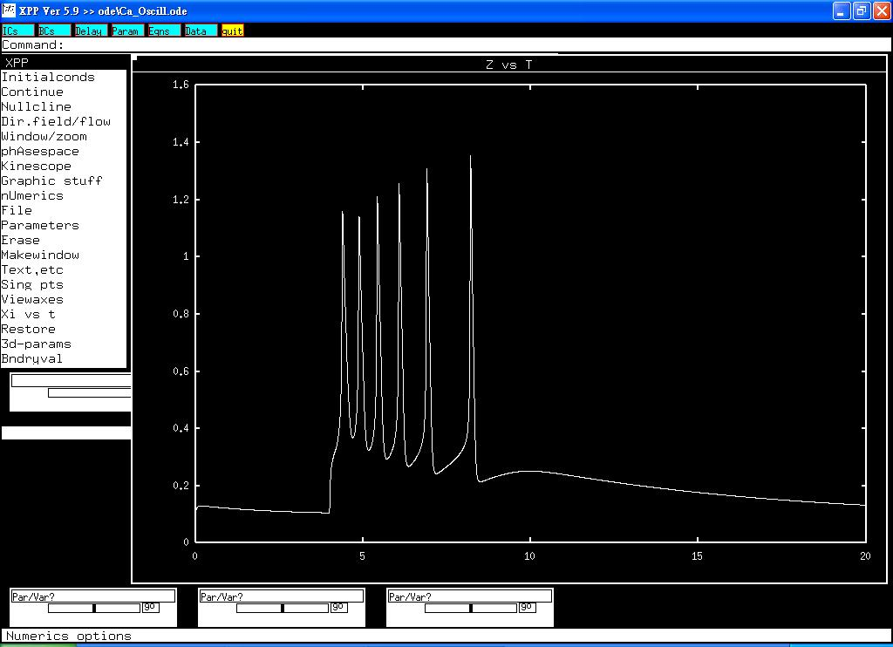

<pre>
This is the readme.txt for the models associated with the paper:

Dupont G, Berridge MJ, Goldbeter A. Signal-induced Ca(2+) 
oscillations: properties of a model based on Ca(2+)-induced 
Ca(2+) release. Cell Calcium 1991;121:73-85.

This minimal kinetic model is used to examine intracellular 
Ca(2+) oscillations caused by increased level of inositol 
triphosphate.

Abstract:

We consider a simple, minimal model for signal-induced Ca2+ 
oscillations based on Ca(2+)-induced Ca2+ release. The model
takes into account the existence of two pools of intracellular
Ca2+, namely, one sensitive to inositol 1,4,5 trisphosphate
(InsP3) whose synthesis is elicited by the stimulus, and one 
insensitive to InsP3. The discharge of the latter pool into the
cytosol is activated by cytosolic Ca2+. Oscillations in
cytosolic Ca2+ arise in this model either spontaneously or in an
appropriate range of external stimulation; these oscillations 
do not require the concomitant, periodic variation of InsP3. The
following properties of the model are reviewed and compared with
experimental observations: (a) Control of the frequency of Ca2+
oscillations by the external stimulus or extracellular Ca2+; 
(b) correlation of latency with period of Ca2+ oscillations
obtained at different levels of stimulation; (c) effect of a 
transient increase in InsP3; (d) phase shift and transient
suppression of Ca2+ oscillations by Ca2+ pulses, and 
(e) propagation of Ca2+ waves. It is shown that on all these
counts the model provides a simple, unified explanation for a
number of experimental observations in a variety of cell types.
The model based on Ca(2+)-induced Ca2+ release can be extended
to incorporate variations in the level of InsP3 as well as
desensitization of the InsP3 receptor; besides accounting for
the phenomena described by the minimal model, the extended model
might also account for the occurrence of complex Ca2+
oscillations.

-------------------------------------------------------

To run the models:
XPP: start with the command
xpp ode\Ca_Oscill.ode
(or wherever you placed Ca_Oscill.ode)
and then Click on Initialconds -> (G)o
to produce a graph similar to Fig 4A:


Bard Ermentrout's website <a href="http://www.pitt.edu/~phase/"> http://www.pitt.edu/~phase/ </a>
describes how to get and use xpp.

These model files were submitted by:

Dr. Sheng-Nan Wu, Han-Dong Chang, Jiun-Shian Wu
Dept Physiol
Natl Cheng Kung U Med Coll
Tainan 70101, Taiwan

snwu@mail.ncku.edu.tw
</pre>
